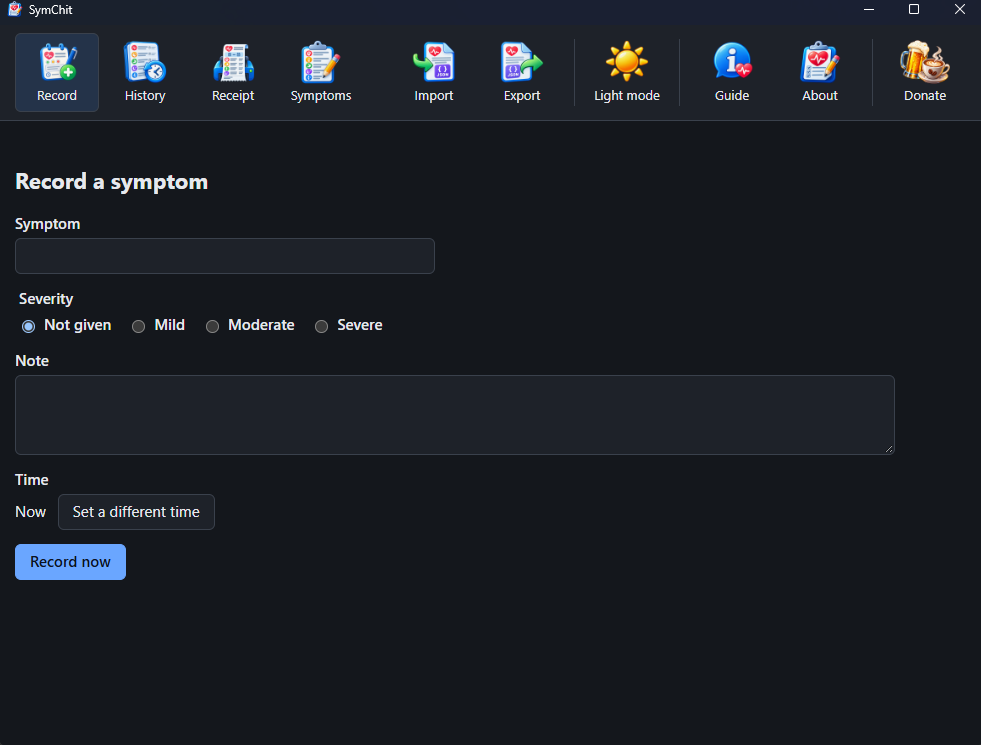
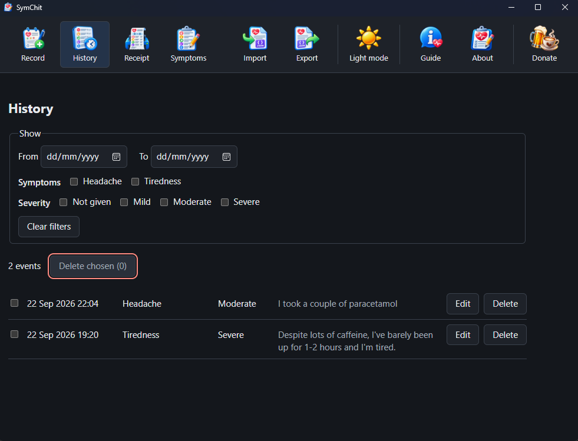
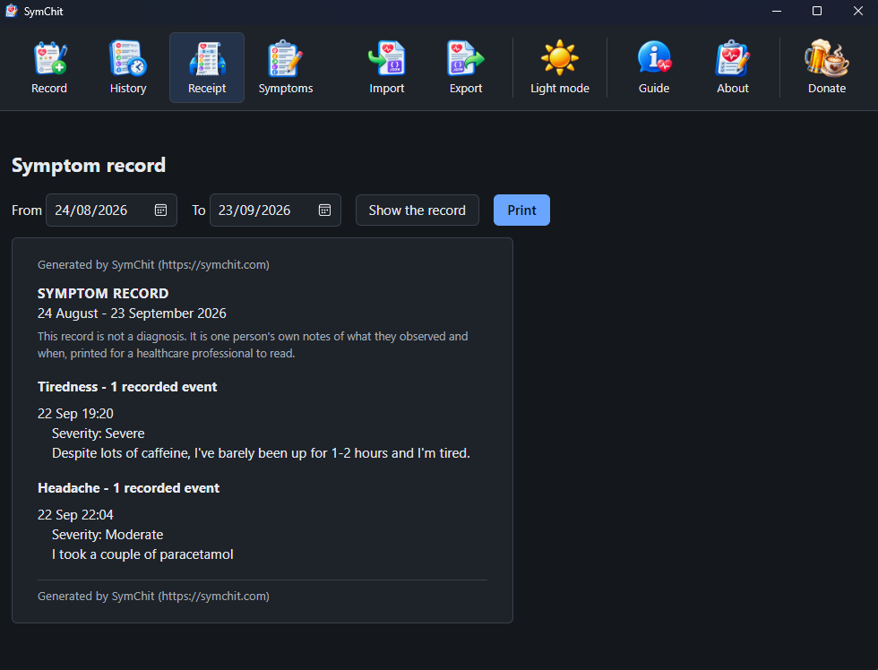
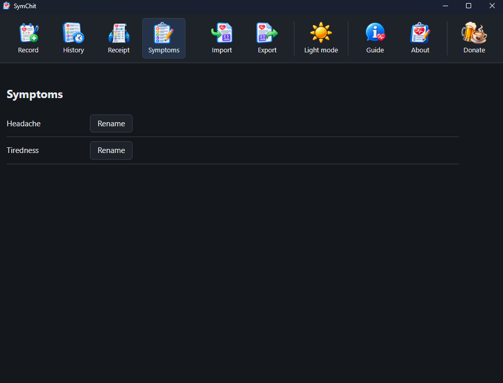

Write it down when it happens.
SymChit is a symptom diary that lives on your own computer. Note what you felt and when you felt it, then print the whole lot to take to your next appointment.
Free, open source, with no network connection opened at all.

Ten minutes is not long enough to remember.
By the time the appointment comes round, the details have gone soft. Was it three mornings last week or five? Did it start before the new tablets or after them? You end up saying "quite often, I think", which is the least useful sentence in the room.
A notebook solves this. SymChit is that notebook, kept somewhere you will not leave it on a train, with the times filled in for you and a tidy printout at the end.
How it works
Three things; the middle one takes care of itself.
Notice it, write it down
Type what you felt in your own words. Add a note if you want one and say how bad it was; leave both out if you would rather, since only the symptom is asked for. It stamps the time for you; set a different one when you are writing up something from earlier.
It builds up
Every entry stays, newest first. Weeks later you have the thing memory cannot give you: what happened, in order, with the times beside it.
Print it for the appointment
Choose the dates you want and press Print. Your printer will offer to save it as a PDF if you would rather email it or keep a copy. Take the sheet in and hand it over.
Everything you have written, in one list
Narrow it to a stretch of dates, to one symptom or to one severity when you want to look something up. Correct an entry that came out wrong; remove one you did not mean to keep.
- It asks before it deletes and names exactly what will go.
- Nothing is hidden from you. The list is the record; there is no other copy of it anywhere.

What your doctor actually sees
Your own words, grouped by symptom, with the times you wrote them down. Nothing else.

- No scores and no charts. Counting your entries is the only arithmetic it does.
- No opinion. It never suggests what any of it might mean; it never says one thing led to another.
- Your wording, untouched. "I took a couple of paracetamol" goes on the sheet as you typed it, not translated into medical language.
- It says what it is. Above the first entry the sheet states that this is not a diagnosis; it is one person's own notes, printed for a healthcare professional to read.
It keeps your words, not its own
The first time you write "Tiredness" it remembers the word and offers it back the next time, so the same thing is not filed under four spellings by December. If you would rather call it something else, rename it and every entry follows.

It stays on your computer
Health notes are about as personal as writing gets, so SymChit does not send them anywhere. It cannot: the program opens no network connection at all; a test in the source forbids the networking code outright.
- No account. Nothing to sign up for, nothing to sign in to, no email address wanted.
- No cloud and no syncing. The record is one file on your machine, where your documents are.
- No adverts and no tracking. Nobody is counting what you write or how often you open it.
- Yours to take away. Export the whole record to a plain file whenever you like, then read it back in.
Said plainly, because it matters: SymChit does not encrypt the file. It is protected the way the rest of your documents are, by the account you sign in to on your own computer. If other people use that account, they can read it.
What it will not do
A program about symptoms is usually assumed to do a few of these. SymChit does none of them, on purpose.
- It does not diagnose, suggest conditions or recommend treatment.
- It does not interpret your notes, score them or rank them.
- It does not rewrite what you wrote into medical terminology.
- It does not remind you or nag you to record anything.
- It is not a substitute for talking to a healthcare professional; it is something to bring with you when you do.
It opens dark and there is a Light mode button in the bar; press it once and it opens that way from then on. It will not change under you because the desktop reached dusk.
Get SymChit
Free on all three, with no licence key and no paid tier.
Windows
A setup program that installs for you alone, so Windows never asks for an administrator.
DownloadLinux
A Flatpak bundle. Install it once and it runs from your applications menu like anything else.
DownloadmacOS
A disk image for Apple Silicon, signed and notarized with Apple, so it opens without a fight.
DownloadPrefer to build it yourself? The whole source is on GitHub, with the build steps written out.
Supporting it
SymChit is free and stays free. Nothing is held back behind a donation. If it has saved you an afternoon or made an appointment go better, there is a button in the bar; there is also one here.
Buy me a coffee